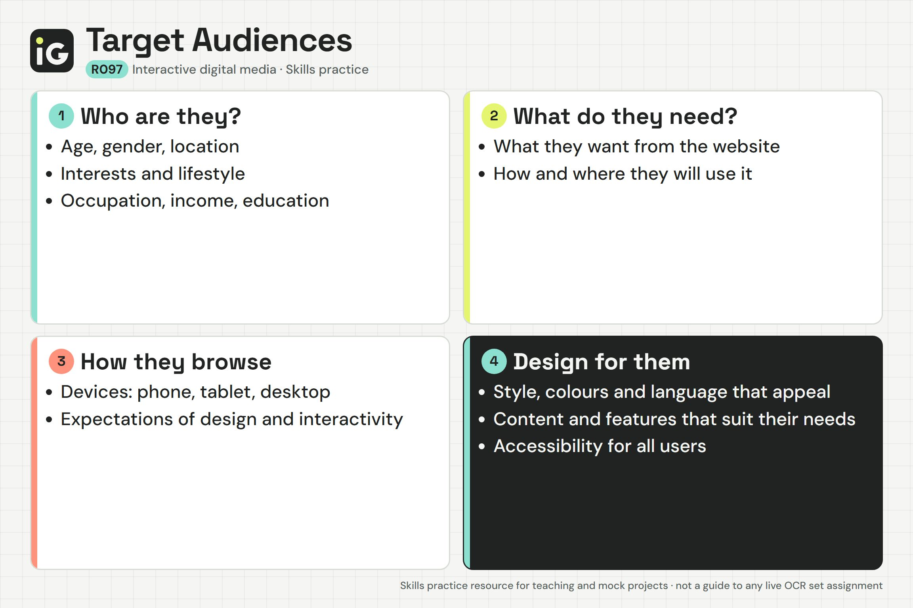

Types of IDM
- Websites, apps, information points
- E-learning, digital maps, games

Decide who the website is for and what will appeal to them.
A strong audience description is specific about age, interests and needs. Practise writing one for a different client from your teacher.
Use this checklist to make sure you can cover every part of this topic.
Audience age, interests and abilities shape content, reading level, interaction style and the devices the product is designed for.